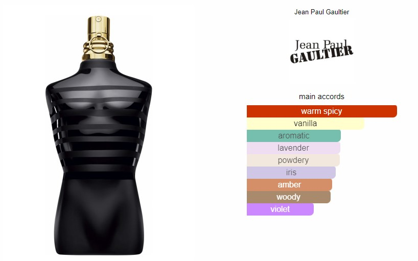

Nagyon finom téli illat, Norbi szájában úgy olvad mint a méz.
A Jean Paul Gaultier Le Male Le Parfum mintájául annak a kapitánynak az erős egyénisége szolgál, aki nélkül soha nem indulhatna el a hajó. Ez az Eau de Parfum azt az erőt és ellenállhatatlan férfias karizmát tükrözi és adja át Önnek, mely a magas rangból következik. A férfitorzó formájú, feltűnő üvegcse az összes Le Male parfüm közös eleme, így ez az Eau de Parfum is megőrizte.